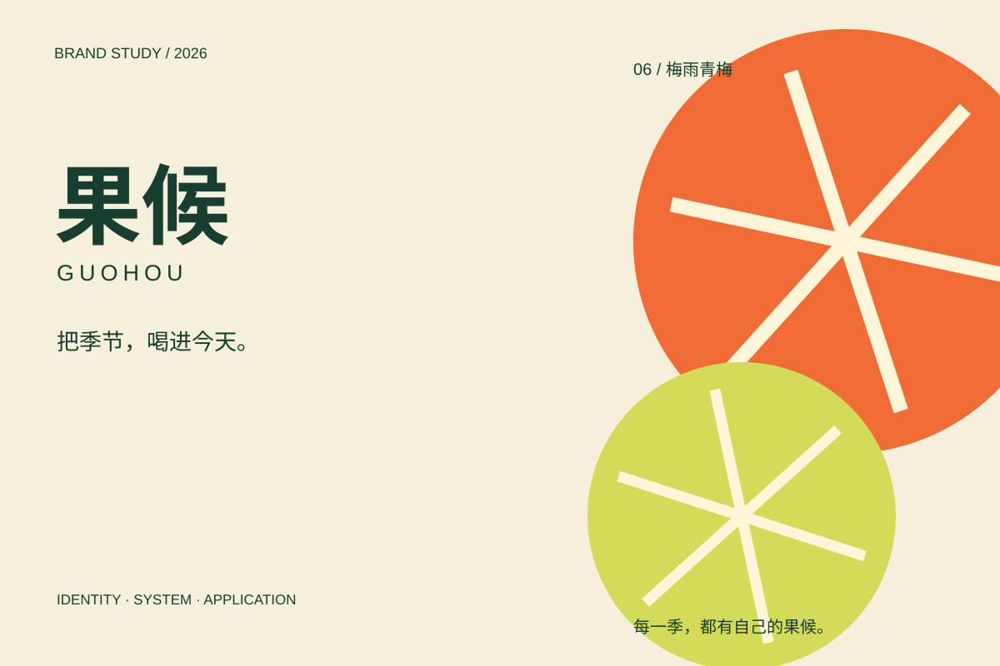
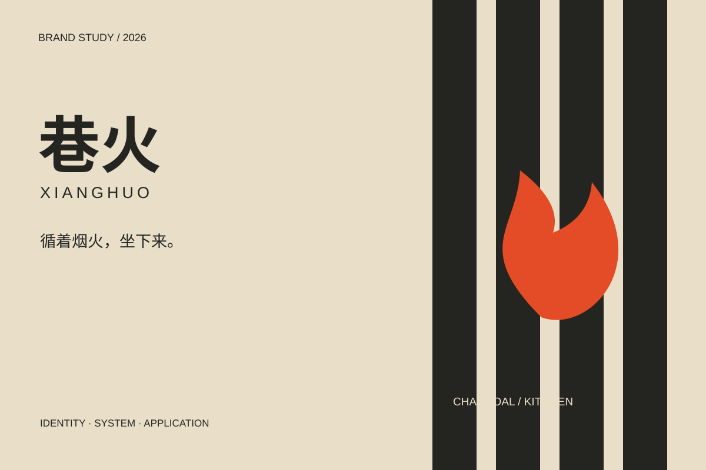
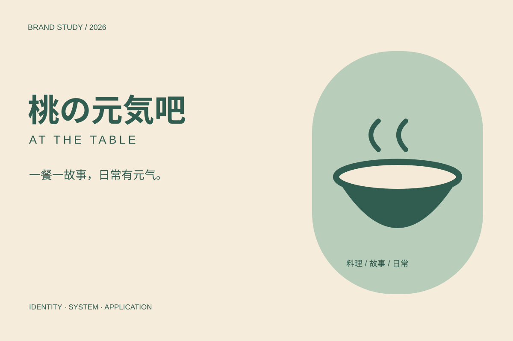

IDENTITY / BRAND SYSTEMS / 2026
Brand studies.
从一个识别符号，到一套能生长的视觉语言。
三个方向，探索时令、烟火与日常故事。
果候、巷火为自主概念设计；桃の元気吧为基于已有栏目的视觉扩展提案。

01 / Seasonal fruit drinks
果候 ↗
以时令为线索，让每一季新品仍然属于同一个品牌。
自主概念设计 / Self-initiated concept

02 / Neighborhood charcoal kitchen
巷火 ↗
用窄巷的纵向节奏，把炭火小馆从街头延伸到餐桌。
自主概念设计 / Self-initiated concept

03 / Cooking & everyday stories
桃の元気吧 ↗
从料理与生活故事出发，建立温暖而有秩序的栏目视觉。
基于已有栏目的视觉扩展提案 / Visual extension study
不止一张标志。
每个案例围绕一个具体问题，展开定位、识别、色彩字体、应用及使用规范。设计设定与真实项目事实均在案例内注明。